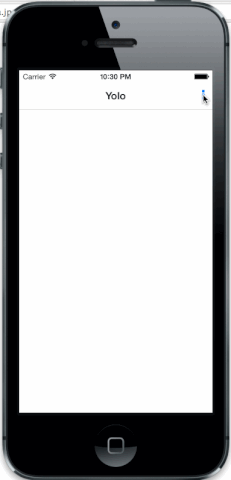

Goal
Today on Saturday, I decided to create a reusable menu. You might notice that this menu is similar to our hack for HackNC. The difference is that the menu for HackNC was pretty much hardcoded. This was bothering me a lot. So I decided to spend the majority of my day rebuilding it from the ground up.
The way I built the menu for HackNC was initially, I wanted a transparent view that disabled any interaction with the previous view. So I decided to use a UIActionSheet, which would cover the entire window, and then I would place the buttons and image View icons one by one, side by side, and manually calculating the offset between each of them. A disadvantage of this was you only could click the buttons. When the user clicked an icon nothing would happen. Another negative thing about using a UIActionSheet to do this was the animation to transition in and out. I placed a black transparent view on the UIActionSheet itself. I had to handle the animation for the black transparent view to fade in and out, as well as show, and dismiss the UIActionSheet. Basically performing 2 rather than 1 animation task. This is totally unnecessary!
To build the transparent menu from the ground up, I decided that it wasn’t the right approach make use of the UIActionSheet in this case. While it did make sense to do so, I needed to create my own custom Controller that performed the same actions as a UIActionSheet. I also realized that you could place a black transparent view over the navigation controller by obtaining reference to the UIWindow and adding it as a sub view to UIWindow.
2 Main Classes created
VVNTransparentView class’s job is to create, show, and dismiss the black transparent view. It also has a beautiful exit icon to dismiss the view.
View Controller class's job, instantiates the VVNTransparentView that calls the corresponding methods to show, and dismiss the transparent view. The View Controller also lays a UITableView on top of the transparent view. We no longer have to hard code all these buttons and images onto a view. Since we are using a UITableView, we can create a custom UITableViewCell, and just implement the UITableView datasource and delegate methods. This is more dynamic compared to my previous approach. There is even custom animation to transition cells in and out which is gorgeous!
Lastly, I had a tough time figuring out how to have a global right navigation bar button item whenever you transition to another view controller. I want the menu icon to stay there on any view controller. Thanks to a post by: stackOverFlow I was able to reuse as much code as possible. Out of the three approaches listed, I went with the inheritance route, to subclass my custom view controller. This made the most sense to me.
Finally
This was overall a fun Saturday. I learned about UIViewAnimation, having a better understanding of navigation controllers, UIWindow, and created my very first block completion handlers. What I hope to improve with this is fading in and out cells from the top and bottom instead of getting cut off.